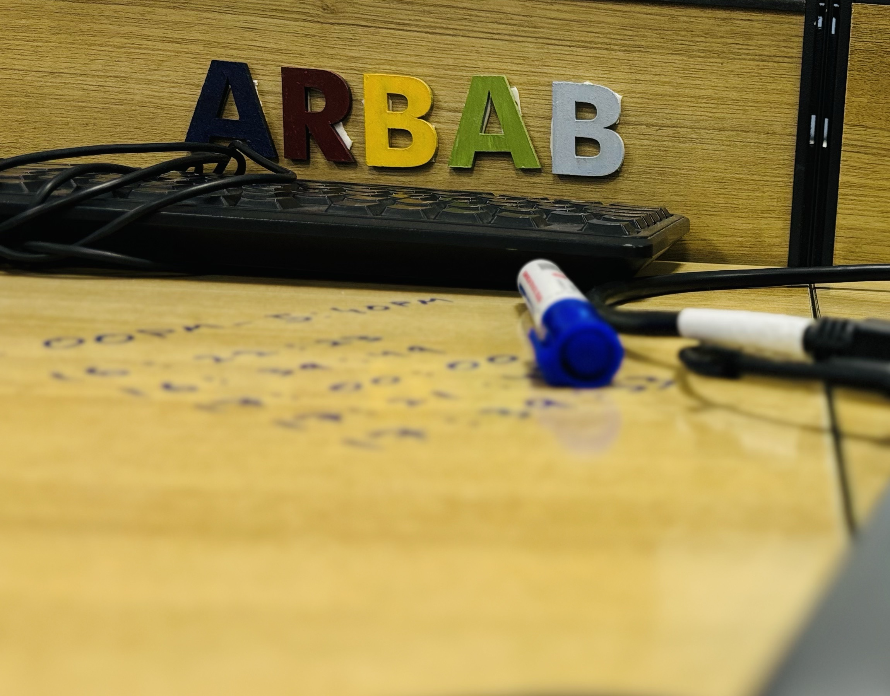
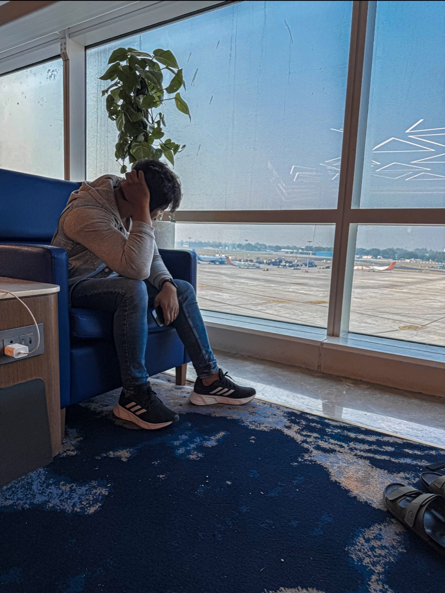
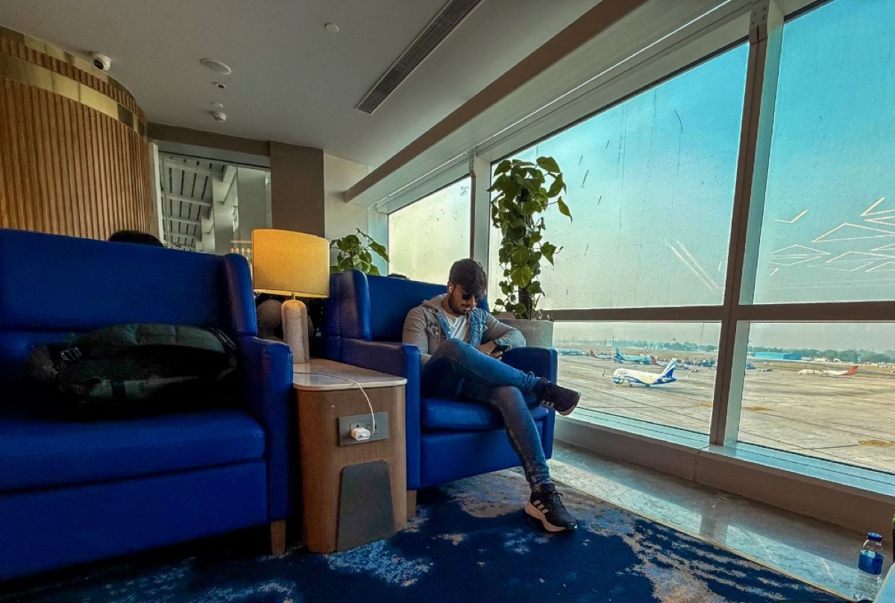

Build and deliver features
Develop end-to-end backend features and REST APIs with Java and Spring Boot.
SOFTWARE ENGINEER · INDORE, INDIA
I build backend systems that work reliably.
01 / ABOUT
I work across the backend development lifecycle: shaping features, building REST APIs, addressing production issues, and collaborating through code reviews.
My day-to-day work has included PostgreSQL, microservices, AWS, multi-tenant systems, and integrations with Klera and Gathr. I enjoy untangling real system problems and making services easier to operate.
More on LinkedIn02 / EXPERIENCE
Software engineering · ClearTrail Technologies
Develop end-to-end backend features and REST APIs with Java and Spring Boot.
Contribute to a migration from HSQLDB to PostgreSQL and support multi-tenant application needs.
Investigate production bugs, take part in code reviews, and optimize RabbitMQ connections.
Work on integrations involving Klera and Gathr.
03 / SELECTED WORK
A few areas I’ve contributed to
Backend feature development, API work, database migration, and multi-tenancy improvements in a production environment.
Integration work across Klera and Gathr, alongside attention to messaging reliability and RabbitMQ connections.
A service marketplace concept for finding and hiring local household service professionals.
04 / MOMENTS
A few scenes from my desk and the moments around it



05 / TOOLKIT
Java · Core Java
Spring Boot
REST APIs · Microservices
PostgreSQL · HSQLDB · RabbitMQ
AWS
LEARNING
As listed on LinkedIn
EDUCATION
Indore · 2019–2022